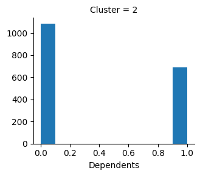
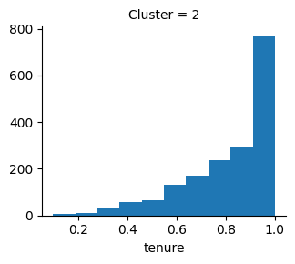
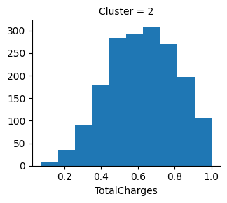
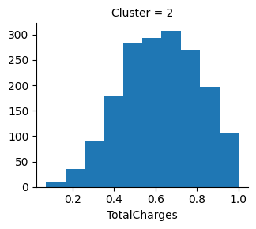
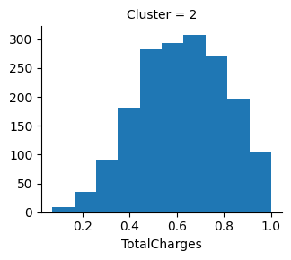

Results
Customer ID : {{customerId}}
Churn Status: {{churn_message}}
Time Period of Churn: {{time_period}}
Segment Type: {{segment_type}}
Customer Characteristics


 


Retention Strategies
-
{% for stmt in retention_strategies: %}
- {{stmt}} {% endfor %}